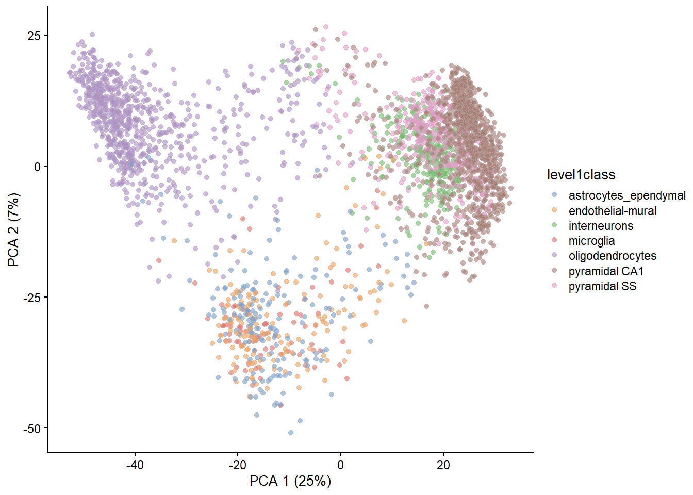
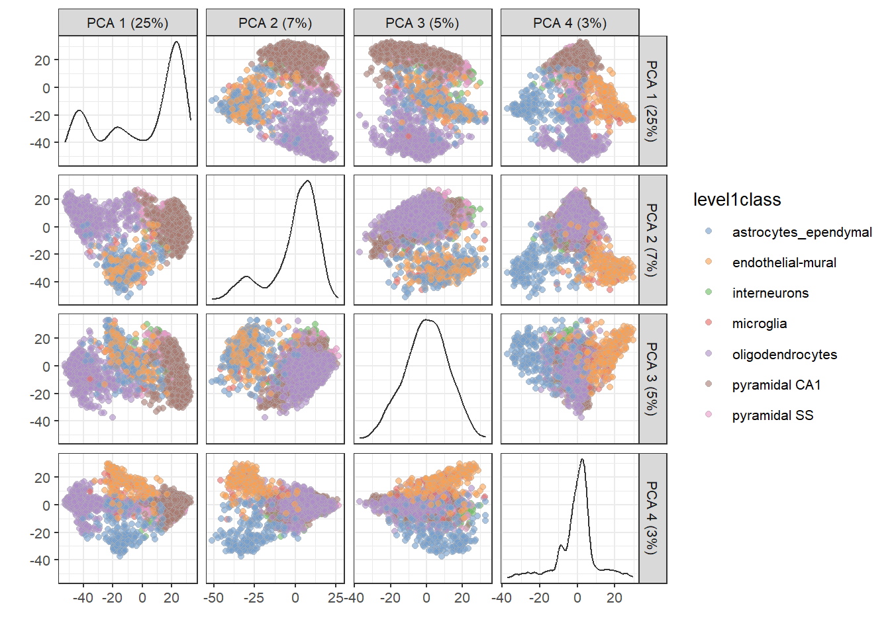
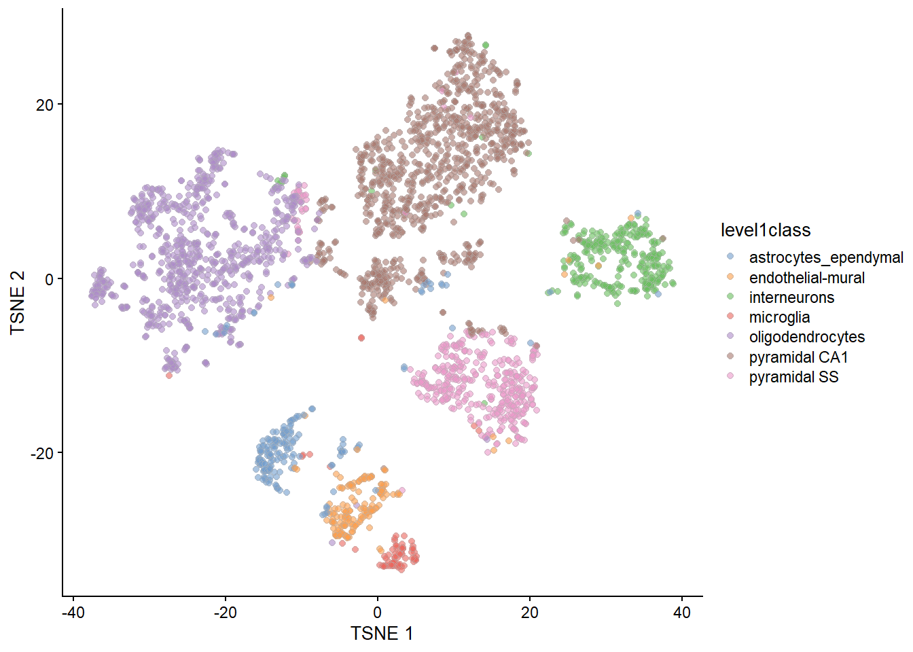
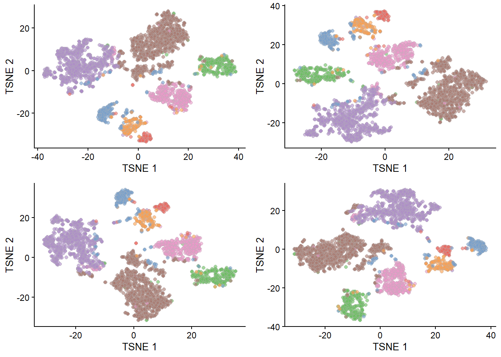
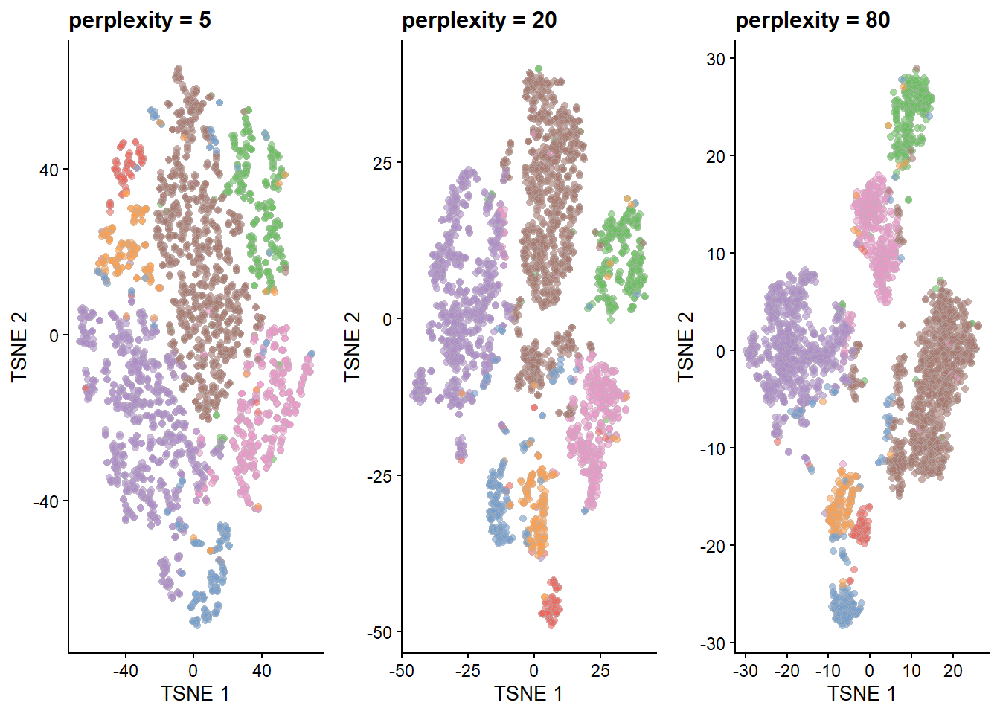
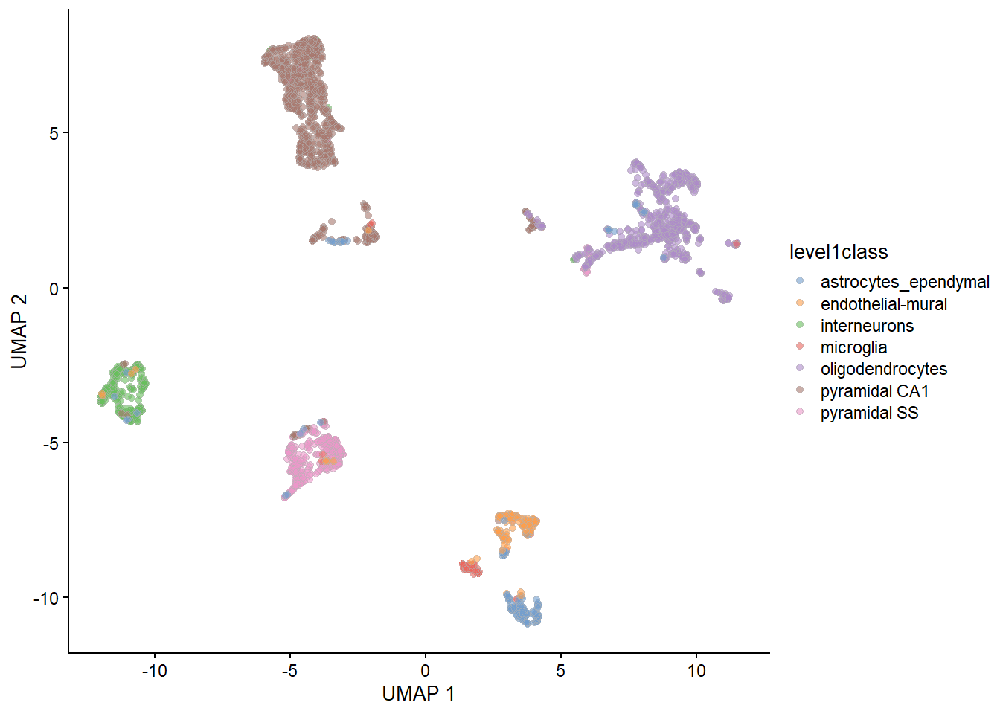

Chapter 6 Exploring dimensionality reduction
This document is adapted from Orchestrating Single-Cell Analysis.
6.1 Load Data
We will use the Zeisel et al. (2015) mouse brain dataset.
For simplicity we will load the data as a SingleCellExperiment object from a saved .rds file. This data has already had some basic QC, normalisation, and dimensionality reduction applied.
Another application of dimensionality reduction is to compress the data into 2 (sometimes 3) dimensions for plotting. This serves a separate purpose to the PCA-based dimensionality reduction described above. Algorithms are more than happy to operate on 10-50 PCs, but these are still too many dimensions for human comprehension. Further dimensionality reduction strategies are required to pack the most salient features of the data into 2 or 3 dimensions, which we will discuss below.
6.2 PCA
We won’t go into the details of PCA here as there are many great visualisations and explanations online. The core idea however is to find the linear subspace which contains most of the variation within the data.
The plot below shows the data projected onto the first two principal components (PCs), each point represents a cell, the colours correspond to the cell type annotations provided by the Zeisel et al..

The simplicity of PCA is both a strength an weakness, because it only finds linear spaces, i.e. variation along straight lines, it can fail to capture important non-linear structure within the data. This is demonstrated in the plot above where different cell-types are not resolved to different coordinates in the first two PCs.
A nice feature of PCA is that it naturally provides many more than two dimensions, so while the first two might not resolve the data sufficiently we can gain more of an insight by looking at where the data lies in the other PCs.

6.3 \(t\)-stochastic neighbor embedding
\(t\)-SNE (Van der Maaten and Hinton 2008) is a non-linear method for finding a low-dimensional representation of data. It prioritises maintaining local distances between data-points, the distances between distant populations are not particularly informative. This gives the method more freedom in constructing the low-dimensional space and therefore it often produces better results than PCA.
set.seed(100)
# runTSNE() stores the t-SNE coordinates in the reducedDims
# for re-use across multiple plotReducedDim() calls.
sce.zeisel <- runTSNE(sce.zeisel, dimred="PCA")
plotReducedDim(sce.zeisel, dimred="TSNE",colour_by="level1class") \(t\)-SNE is quite computationally intensive and so it is ordinarily run on the first 50-100 PCA components of the data rather than the raw expression values, this also takes advantage of the denoising that PCA provides.
Unlike PCA it is a stochastic method and so, unless a random seed is specified each time, sequential runs of the algorithm will produce different results.
set.seed(100)
sce.zeisel <- runTSNE(sce.zeisel, dimred="PCA")
tsne.plot.1 <- plotReducedDim(sce.zeisel, dimred="TSNE",colour_by="level1class", add_legend=FALSE)
sce.zeisel <- runTSNE(sce.zeisel, dimred="PCA")
tsne.plot.2 <- plotReducedDim(sce.zeisel, dimred="TSNE",colour_by="level1class", add_legend=FALSE)
sce.zeisel <- runTSNE(sce.zeisel, dimred="PCA")
tsne.plot.3 <- plotReducedDim(sce.zeisel, dimred="TSNE",colour_by="level1class", add_legend=FALSE)
sce.zeisel <- runTSNE(sce.zeisel, dimred="PCA")
tsne.plot.4 <- plotReducedDim(sce.zeisel, dimred="TSNE",colour_by="level1class", add_legend=FALSE)
multiplot(tsne.plot.1,tsne.plot.2,tsne.plot.3,tsne.plot.4,
layout=matrix(seq(4),nrow=2,byrow=TRUE)) Some of these results might be more appealing than others, however it is important to try and avoid ‘cherrypicking’ the plots that conform best to our preconceptions.
Furthermore \(t\)-SNE also has a number of parameters which can significantly effect the output, they are discussed in depth here.
The effect of changing one of these parameters, the perplexity is shown below:
set.seed(100)
sce.zeisel <- runTSNE(sce.zeisel, dimred="PCA", perplexity=5)
out5 <- plotReducedDim(sce.zeisel, dimred="TSNE",colour_by="level1class", add_legend=FALSE) +
ggtitle("perplexity = 5")
set.seed(100)
sce.zeisel <- runTSNE(sce.zeisel, dimred="PCA", perplexity=20)
out20 <- plotReducedDim(sce.zeisel, dimred="TSNE",colour_by="level1class", add_legend=FALSE) +
ggtitle("perplexity = 20")
set.seed(100)
sce.zeisel <- runTSNE(sce.zeisel, dimred="PCA", perplexity=80)
out80 <- plotReducedDim(sce.zeisel, dimred="TSNE", colour_by="level1class", add_legend=FALSE) +
ggtitle("perplexity = 80")
multiplot(out5, out20, out80, cols=3)
6.4 UMAP
The uniform manifold approximation and projection (UMAP) method (McInnes, Healy, and Melville 2018) is another non-linear dimensionality reduction technique that is becoming increasingly popular. The underlying theory is different to that of \(t\)-SNE and the results are different as demonstrated in the plot below.
set.seed(100)
sce.zeisel <- runUMAP(sce.zeisel, dimred="PCA")
plotReducedDim(sce.zeisel, dimred="UMAP", colour_by="level1class")
UMAP tends to produce more compact visualisations than \(t\)-SNE, preserving more of the global structure. Furthermore it is much faster which can be important for large datasets, a primary reason for its increasing popularity. Like \(t\)-SNE it involves random numbers and so setting a seed is important for reproducibility.
6.5 Bibliography
McInnes, Leland, John Healy, and James Melville. 2018. “UMAP: Uniform Manifold Approximation and Projection for Dimension Reduction.” arXiv E-Prints, February, arXiv:1802.03426.
Van der Maaten, L., and G. Hinton. 2008. “Visualizing Data Using T-SNE.” J. Mach. Learn. Res. 9 (2579-2605): 85.
Zeisel, A., A. B. Munoz-Manchado, S. Codeluppi, P. Lonnerberg, G. La Manno, A. Jureus, S. Marques, et al. 2015. “Brain structure. Cell types in the mouse cortex and hippocampus revealed by single-cell RNA-seq.” Science 347 (6226): 1138–42.